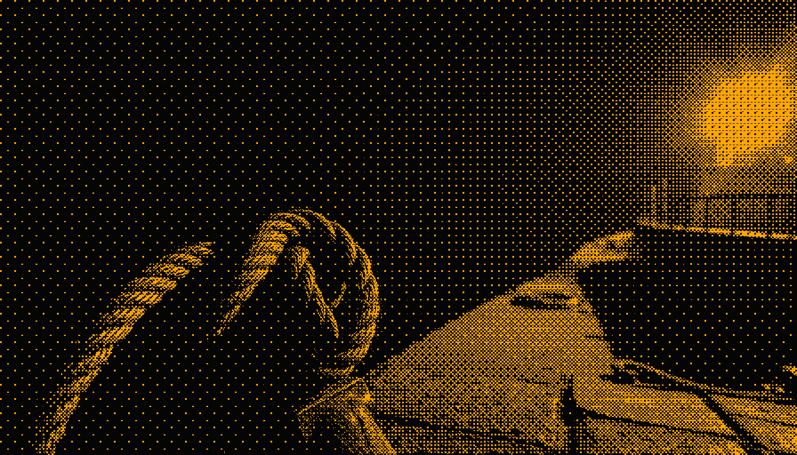
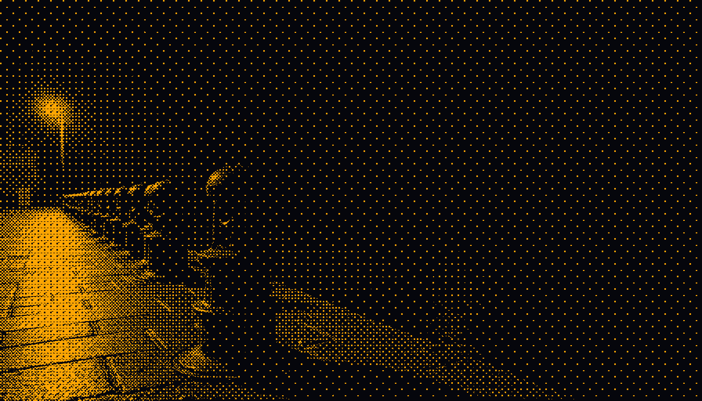
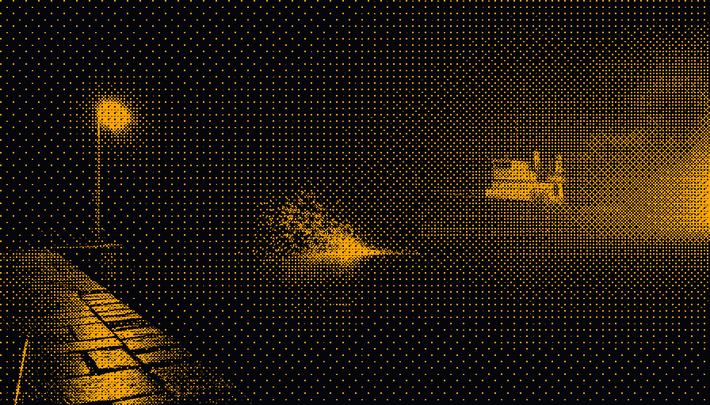

24/7 coding coverage
for a flat $319 a month.
A pool of subscription coding agents, scheduled by arithmetic instead of hope. The gap between 63% and 100% is not model quality — it is scheduling.
Coverage
Two subscriptions lose a third of the week.
Any single agent seat hits weekly quota ceilings, sleeps while you sleep, and burns its best hours on grind. Simulated at medium 24/7 demand, Claude Max + ChatGPT Pro ($300/mo) serve 63% of arriving work — the rest queues behind resets.
The fleet keeps the same architect judgment and routes every unit of work to the cheapest lane that can hold it. SIMULATED — 70 tests green

The night watch — every berth metered before a hull takes a lane
Lanes
Five lanes, one queue.
| Lane | Role | Cost | Terminal-Bench 2.1 (best harness) |
|---|---|---|---|
| Claude (Opus/Fable) | Architect, judgment, conversation | $200/mo sub | 84.6 |
| Codex (GPT-5.6) | Repo grind, implementation | $100/mo (ends Sept) | 88.8 |
| Kimi K3 “Allegro” | Replaces the Codex lane at renewal | $99/mo | claimed 88.3 UNVERIFIED |
| GLM 5.3 | Final backup when subs hard-stop | $20/mo credits | 82.7 |
| Free surge (opencode) | $0 grind — appears and vanishes | $0 | 87.9 until the pool rotates |
Scheduler
What the harbourmaster does.
- Meters before model calls.
Every lane's hourly, daily and weekly burn is checked before work starts. A refused task costs zero tokens.
- Leak stops same-day.
A runaway agent — the first catch was burning 13% of the weekly budget per hour with no output — is parked automatically. Burn is audited every 2%; soft stops at 4% (daily) and 7% (weekly); hard stops at 12% and 15%.
- Overnight unattended missions.
Headless builder plus an independent critic per phase. Every morning has a report of done, evidence, blocked — 45 logged episodes, measured quality 0.87–0.92 on the free lane.
- Warm sessions, bounded context.
Compaction points are solved from the provider's own cache-price ratio (the closed form is derived in the evidence paper) — cutting one measured burn by 42%.
- Degradation by design.
Lanes fail in a ladder: Claude → Codex+free → free+GLM → Kimi. The queue never dies; routing just gets cheaper and slower.

The bollard row — five moorings, one queue, whatever arrives ties up somewhere
Numbers
The numbers, with their tags on.
| Stack | Cost | Light | Medium | Heavy | Status |
|---|---|---|---|---|---|
| Claude + Codex (today's default) | $300 | 100% | 63% | 63.9% | SIMULATED |
| Codex + free (Claude stopped) | $100 | 100% | 100% | 57.3% | SIMULATED |
| Free + GLM (both subs stopped) | $20 | 100% | 100% | 67.9% | SIMULATED |
| Claude + Kimi + GLM (+free) | $319 | 100% | 100% | 100% | SIMULATED |
$200 Claude + $99 Kimi + $20 GLM = $319/mo. Light, medium and heavy are three separately-simulated demand traces — different weeks, not supersets — so columns don't move in lockstep (medium 63% beside heavy 63.9% is the traces differing, not a typo). The $20 row survives heavy only by leaning on the free surge lane, which is excluded from durable verdicts — it rotated once already. Sim = discrete-event backtest (stack_backtest.py, 70 tests green).

The seawall lamp — when a lane starves, it starves under the light, never in the dark
Honesty
What it costs to be honest.
The 100% figure is a simulation result under modeled demand, re-run as a contract test on every change — not a mathematical theorem about all futures.
Heavy real-world weeks can still starve a lane. The scheduler's promise is that starvation, when it happens, is visible and priced — never silent. No claim on this page is dressed up as more than its evidence tag.